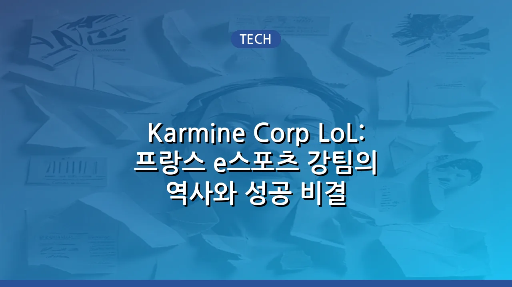

Karmine Corp LoL: 프랑스 e스포츠 강팀의 역사와 성공 비결
Karmine Corp LoL 팀, 그들의 시작과 성장
Karmine Corp (카민 코프), 줄여서 KC는 프랑스를 기반으로 하는 e스포츠 조직으로, 특히 리그 오브 레전드(League of Legends, LoL) 부문에서 독보적인 존재감을 드러내고 있습니다. 2020년에 설립된 이 팀은 짧은 역사에도 불구하고 유럽 LoL e스포츠 씬에서 가장 강력하고 인기 있는 팀 중 하나로 급부상했습니다. 창단 초기부터 공격적인 투자와 뛰어난 선수 영입으로 주목받았으며, 빠르게 프랑스 국내 리그(LFL)와 유럽 2부 리그 격인 EU Masters에서 두각을 나타내기 시작했습니다.
KC의 성장은 단순한 경기력 향상을 넘어선 문화적 현상이기도 합니다. 이들은 전통적인 스포츠 구단처럼 강력한 팬덤을 구축하며, 특히 프랑스 지역 팬들에게 뜨거운 지지를 받고 있습니다. 이러한 팬덤은 팀의 경기력에 긍정적인 영향을 미치고, 동시에 팀의 마케팅 및 브랜드 가치를 높이는 핵심 동력이 되고 있습니다. KC는 LoL을 넘어 다양한 종목으로 영역을 확장하고 있지만, 여전히 LoL 팀은 그들의 상징이자 핵심입니다.
성공의 비결: 독보적인 팬덤과 전략적인 운영
Karmine Corp LoL 팀의 성공은 여러 요인이 복합적으로 작용한 결과입니다. 가장 두드러지는 것은 바로 '팬덤'입니다. KC는 유럽 e스포츠 팀 중에서도 손꼽히는 규모와 열정을 가진 팬 커뮤니티를 보유하고 있습니다. 이들의 팬들은 경기 현장에서 압도적인 응원전을 펼치고, 온라인에서도 활발한 활동을 통해 팀에 대한 지지를 아끼지 않습니다. 이러한 팬심은 선수들에게 큰 동기 부여가 되며, 팀의 브랜드 가치를 지속적으로 상승시키는 원동력이 됩니다.
또한, KC는 전략적인 운영과 영리한 선수 영입으로 팀의 기량을 꾸준히 유지하고 발전시켜 왔습니다. 단순히 유명 선수를 영입하는 것을 넘어, 팀의 문화와 전술에 잘 맞는 선수들을 발굴하고 육성하는 데 집중합니다. 코칭 스태프와 프런트의 유기적인 협력은 선수들이 최고의 기량을 발휘할 수 있는 환경을 조성하며, 이는 중요한 경기에서 팀이 빛을 발하는 결과로 이어집니다.
Karmine Corp의 성공 요인들을 요약하자면 다음과 같습니다.
- 압도적인 팬덤: 유럽 e스포츠에서 가장 열정적이고 규모가 큰 팬 커뮤니티를 자랑합니다.
- 전략적인 선수 영입 및 육성: 팀의 색깔에 맞는 인재 발굴과 잠재력 개발에 집중합니다.
- 강력한 팀 문화: 선수들과 코칭 스태프 간의 견고한 유대감과 목표 의식을 바탕으로 합니다.
- 꾸준한 투자: 최고의 훈련 환경과 지원을 통해 선수들이 경기에만 집중할 수 있도록 돕습니다.
주요 성과 및 기억할 만한 순간들
Karmine Corp LoL 팀은 창단 이후 짧은 기간 동안 수많은 트로피를 들어 올리며 자신들의 실력을 증명했습니다. 특히 유럽의 2부 리그인 EU Masters(유럽 마스터즈)에서는 전례 없는 기록을 세우며 압도적인 강팀의 면모를 보여주었습니다. EU Masters는 유럽 각국 리그의 강팀들이 모여 겨루는 대회로, LEC(유럽 1부 리그)로 진출하기 위한 중요한 발판이 됩니다. KC는 이 대회에서 여러 차례 우승을 차지하며 유럽 LoL 씬에 자신들의 이름을 각인시켰습니다.
기억할 만한 순간으로는 팬들의 열광적인 현장 응원과 함께 거둔 중요한 승리들이 있습니다. 대규모 경기장에서 펼쳐진 결승전에서 팬들의 파란색 물결은 KC의 상징이 되었으며, 선수들에게 엄청난 힘을 실어주었습니다. 이러한 순간들은 단순한 승리를 넘어, e스포츠가 팬들과 함께 만들어가는 하나의 축제임을 보여주는 사례로 평가받고 있습니다.
Karmine Corp LoL 팀의 현재와 미래 전망
Karmine Corp LoL 팀은 현재 유럽 LoL e스포츠 씬에서 여전히 강력한 영향력을 행사하고 있습니다. 그들은 자신들의 연고지인 프랑스 리그(LFL)에서 꾸준히 상위권을 유지하며, 국제 대회 진출을 위한 노력을 지속하고 있습니다. 최근에는 유럽 1부 리그인 LEC에 참여할 기회를 얻는 등, 더 큰 무대로 나아가기 위한 발판을 마련했습니다. 이는 KC의 브랜드 가치와 팀의 역량이 유럽 최고 수준임을 방증하는 것입니다.
미래 전망에 있어서 Karmine Corp는 계속해서 유럽 e스포츠의 선두 주자로 자리매김할 것으로 예상됩니다. 강력한 팬덤을 기반으로 한 재정적인 안정성과 뛰어난 운영 능력은 팀이 지속적으로 최고 수준의 경쟁력을 유지할 수 있도록 할 것입니다. 또한, 젊고 재능 있는 선수들을 발굴하고 육성하는 데 꾸준히 투자하여, 장기적인 관점에서 팀의 성공을 이어나갈 계획입니다. LoL 월드 챔피언십과 같은 국제적인 무대에서 KC의 파란색 깃발이 휘날리는 날을 많은 팬들이 기대하고 있습니다.
결론
Karmine Corp LoL 팀은 짧은 역사에도 불구하고 프랑스를 넘어 유럽 LoL e스포츠를 대표하는 강팀으로 성장했습니다. 독보적인 팬덤, 전략적인 운영, 그리고 끊임없는 도전 정신은 그들을 성공으로 이끈 핵심 비결입니다. 앞으로도 Karmine Corp는 e스포츠의 새로운 역사를 써 내려가며 많은 팬들에게 감동을 선사할 것으로 기대됩니다.
🔗 이 글도 함께 보면 좋아요: 카르민 코프(Karmine Corp) e스포츠 팀: 역사, 주요 종목, 팬덤 특징